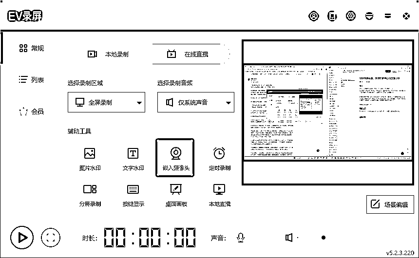
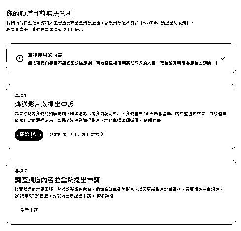
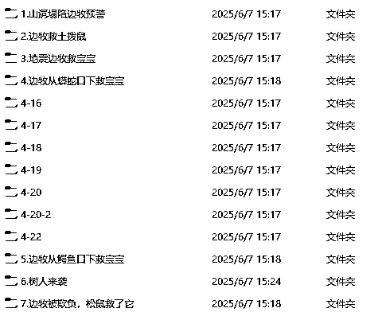
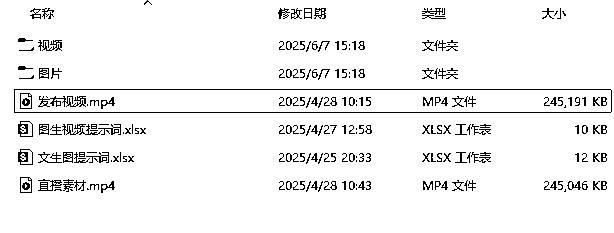

来源：https://wm1881zs6s.feishu.cn/docx/UqIwdVxiCody11xzZxncckGInoc
之前有一个号YPP申诉失败了，但是昨天进行重新申诉后，居然通过了。
而且在这次申诉过程中，我没有展示我的视频制作过程的素材和提示词制作的素材，只是口述了一下（因为我找不到当时的记录了），这居然也过了，所以在这里分享一下。
参考方波妮教练的申诉帖子，我申诉通过了几个账号，然后我总结出了一个YPP申诉的流程稿，我4个号都是按照这个稿子讲，然后过的，那个没通过的是因为之前录的时候偷了一下小懒，没按照这个流程来，所以没过，不过这次重新申诉，我按照这个流程去录，也过了。
下面给大家分享这个流程。
申诉视频的右下角最好放上自己的人像。
我用的录屏软件叫EV录屏，如果你的电脑有摄像头的话，它支持视频和摄像头一起录。

如果你的电脑没有摄像头的话，你就用手机录自己的人像，然后EV录屏录屏幕画面，到时候用剪映剪到一起去就行了。
先讲一下申诉的整体流程，这个是按照方波妮教练的申诉框架来的。
申诉内容框架：
视频要在5分钟以内
接下来[]中的内容是指录屏时应该展示的画面，其他的就是话术。

第一步：简单介绍申述原因
[YPP申请页面]
尊敬的审核员你好，我现在要进行YPP的申述，我被拒的原因是重复使用的内容。
第二步：简单介绍频道主页
[频道主页]
我的频道名称是XXXXX
我的频道ID是XXXXX
我的频道目前有X个视频
[展示各个页面的视频，如果你只有shorts，那你就滚动shorts页面就行了]
shorts视频有X个
长视频有X个（没有长视频就不说）
直播视频有X个（没有就不说）
直播视频的内容都是由我的Shorts视频拼接成的（这个看个人情况，因为我的直播视频是用Shorts视频拼的，所以我这样说）。
第三步：演示某个视频的创作过程
[停留在主页，要能看到你准备演示制作流程的那个视频]
现在我以我这个视频为例，向您演示我的视频创作的完整流程。（最好是用你能找到文生图，图生视频这些素材制作记录的视频来演示）
[展示你要演示的视频，快速点击一些画面，不用等他放完。]
先给您看一下我这个视频的关键帧
[展示一个新创建的gemini窗口]
（经过我的亲身经历，你不用拿出你制作提示词的那个记录来给他看也行，因为我的稿子都是直接对标别人的，懂得都懂，我总不能说我的视频是对标的它的）
我做的是动物救援赛道，这个赛道的故事模板就是人类受伤然后动物拯救人类。所以我会先和gemini进行一个沟通，让它根据这个模板帮我构思剧情，剧情构思好之后，我会让它给我出一套分镜提示词，然后我用这套分镜提示词进行文生图。
[展示即梦展示当时制作这个图片素材的记录]
（我是即梦出图，所以这里是展示的即梦，如果你们是用其他软件出的图，就展示其他的软件）
这些是我当时制作这条视频时，做出来的图片素材，这里可以看到出图的时间，和出图的提示词，即梦一次会出四张图我会从这里面选出符合我要求的图片。
[展示图片保存在本地的文件夹画面]
然后下载到本地，并把文生图提示词记录到文档中。
[展示你记录文生图提示词的文档]
这些就是制作这条视频图片素材的所有提示词，我都有记录。
[展示可灵主页]
（我当时申诉的那个号，我已经找不到我制作视频的素材记录了，我就打开了可灵的主页，记得登录，然后就停留在这个主页说我的话术）
图片素材都制作好后，我会使用可灵来进行图生视频。
[展示视频片段保存到本地的文件夹]
然后我会把生成好符合我要求的视频下载到本地。
[展示你记录图生视频提示词的文档]
并且我会把图生视频的提示词保存在文档中。
[展示你的剪映剪辑记录，要能看到视频片段的拼接，配音，BGM这些东西]
视频片段制作好之后，我会打开剪映，把视频片段拼接起来，然后给一些分镜添加上合适的音频素材，这些素材都是我从剪映的音效库里面找到的。配好音效后，我会加上合适的BGM，这个BGM是我自己用AI制作的，最后再右下角加上我自己的人像，这个视频就做好了，然后就是导出设置为4K，60帧，上传到我的Youtube频道。
第四步：演示其他视频也是这样创作的
[展示你的其他视频的文件夹]
我的其他视频也都是这个制作流程，可以看到，这些提示词，图片我都有保存。
为了让大家不觉得太抽象。我给大家看一下我的文件夹结构，我说这句话的时候，我会随便点开这些文件夹目录

文件夹目录底下的结构是这样的

我会就把这些内容展示出来，但是我不会再点开任何文件了，我只会返回上一级目录，继续展示几个文件夹给它们看。
（展示完就可以结束了）